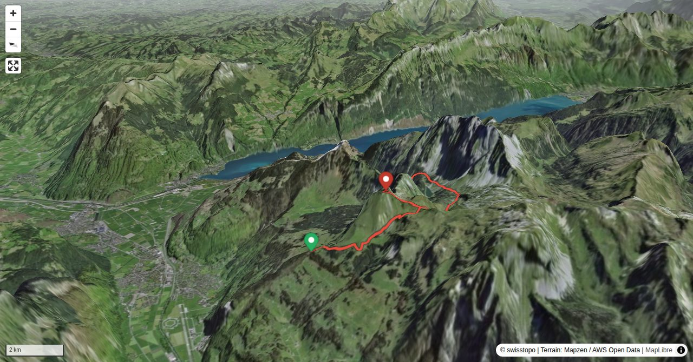

Der Fronalpstock ist wohl DER Aussichtsberg im vorderen Glarnerland. Kein Wunder ist man an schönen, sichtigen Tagen selten alleine auf dem Gipfel.
Endpunkt ohne Sesselbahnfahrt (Wanderzeit plus rund 45 Min.)
Quick Facts
| Summit elevation | 2124 m |
|---|---|
| Difficulty | SAC T4 Alpine hiking with exposure, rougher terrain, and sections that are not suitable for beginners. Guide |
| Trailhead | Naturfreundehaus Fronalp |
| Distance | 11.6 km (out-and-back) |
| Total ascent | ~934 m |
| Elevation range | 1086-2124 m |
| Route sources | SAC Route Portal |
Photos


Route Map & Elevation
i
i
sac_scale (precise T1–T6) with
swissTLM3D Wanderwegart
fallback where OSM is silent (coarser T2/T3 and T4+ buckets).
Coverage: OSM 59.9% · swisstopo 33.7% · unknown 0.0%.Elevations computed from the inlined GPX track (SwissTopo height API).
Loading forecast…
3D Terrain View

Route Details
Ab Natufreundehaus Fronalp mit Abstieg nach Habergschwänd (Filzbach)
- Naturfreundehaus Fronalp - Fronalppass, T2, 1 Std.
- Fronalppass - Fronalpstock retour, T4, 1 Std. 30 Min.
- Fronalppass - Habergschwänd T2, 2 Std. 30 Min.
Terrain & safety
Die anspruchsvollste Passage der Tour befindet sich in der Scharte zwischen der Zelsegg und dem Gipfel. Auf knapp 40 Höhenmetern ist kraxeln angesagt. Die Route durch die Scharte ist mit Ketten gut abgesichert und nirgends ausgesetzt. Anspruchsvoll ist eher der Andrang an schönen Sommertagen, was zu Stau, Kreuzungs- und Überholmanövern führen kann. Bei Nässe rutschig.
Source: SAC Route Portal
Getting There & Back
Start: Naturfreundehaus Fronalp (1389 m)
Directions from to Naturfreundehaus Fronalp
End: Habergschwänd, Bergstation (1278 m)
Directions from Habergschwänd, Bergstation back to
Field Reference
| Trailhead | Naturfreundehaus Fronalp | 47.07110, 9.09120 |
|---|---|---|
| Summit | Fronalpstock Gl (2124 m) | 47.06869, 9.10878 |
Coordinates are WGS84 decimal degrees (lat, lon). Emergency: 112 (general) or 1414 (Rega air rescue). Page URL: